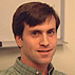

MAE Research Team

- Michael Chinander
- Postdoctoral Scholar, Kurt Rossman Laboratories for Radiologic Image Research
- University of Chicago
- m-chinander@uchicago.edu
- David Cookson
- Head of Beamline Science and Operations
- Australian Synchrotron
- david.cookson@synchrotron.org.au
- Christopher M. Deemer
- Sensors, Instrumentation, and Non-Destructive Evaluation
- Argonne National Laboratory
- deemer@anl.gov
- Paula Doumani
- Ph.D. Candidate, Department of Anthropology
- Washington University in Saint Louis
- pauladoumani@go.wustl.edu
- William A. Ellingson
- Senior Research Scientist, Sensors, Instrumentation, and Non-Destructive Evaluation
- Argonne National Laboratory
- ellingson@anl.gov
- Alan Greene
- Ph.D. Candidate, Department of Anthropology
- University of Chicago
- agreene@uchicago.edu
- Charles Hartley
- Ph.D. Candidate, Department of Anthropology
- University of Chicago
- chartley@uchicago.edu
- MaryFran Heinsch
- Ph.D. Candidate, Department of Anthropology
- University of Chicago
- mfheinsc@uchicago.edu
- Lori Khatchadourian
- Postdoctoral Assistant Professor, Department of Anthropology
- Cornell University
- lk323@cornell.edu
- E. Richard Koehl
- Custodian, X-ray Computed Tomography Laboratory, Nuclear Engineering Division
- Argonne National Laboratory
- dick.koehl@anl.gov
- David Peterson
- Assistant Professor, Department of Anthropology
- Idaho State University
- petedavi@isu.edu
- Adam T. Smith
- Associate Professor, Department of Anthropology
- University of Chicago
- atsmith@uchicago.edu